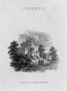
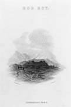
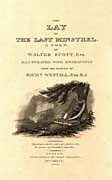

|
|
Home | Corson
Collection | Biography | Works | Image
Collection | Recent Publications | Portraits | Correspondence | Forthcoming
Events | E-texts | Contact
|  |
Pages Relating
to Particular Works by Scott
|
|
 |
For pages which discuss more than one work,
see Online Essays and Criticism.
A. Fiction: The
Abbot | Anne of Geierstein | The
Antiquary | The Betrothed | The
Black Dwarf | The Bride of Lammermoor | The
Fair Maid of Perth | The Fortunes
of Nigel | Guy Mannering | The
Heart of Mid-Lothian | Ivanhoe | Kenilworth | A
Legend of Montrose | The Monastery | 'My
Aunt Margaret's Mirror' | Old
Mortality | Peveril of the Peak | The
Pirate | Quentin Durward | Redgauntlet | Rob
Roy | Saint Ronan's Well | The
Talisman | Waverley | Woodstock
B. Poetry: 'Bonny
Dundee' | The Lady of the Lake | The
Lay of the Last Minstrel | 'Lochinvar' | The
Lord of the Isles | Marmion | Minstrelsy
of the Scottish Border | Rokeby
C. Miscellaneous Prose: Tales
of a Grandfather
A. Fiction
The Abbot
Synopses and General Introductions | Art
Synopses
and General Introductions
Back to The Abbot
Art
Inspired by The Abbot
Back to The Abbot
Back to top
Anne
of Geierstein
- 'Anne
of Geierstein' - From the Maybole home
page (a community site for Maybole, Ayrshire), a colour portrait
of the heroine of Scott's novel Anne
of Geierstein extracted from an unidentified nineteenth-century
edition of the novel.
- Wikipedia -
Very brief entry on Anne of Geierstein (as at March
2007) offering a plot outline and list of external links.
Back to top
The Antiquary
Synopses and General Introductions | Criticism | Sources | Art | Settings
Synopses
and General Introductions
- A
Brief History of Western Culture - Brief but cogent analysis
of The Antiquary,
focussing, in particular, on the absence of a central thread
and on the themes of dilettantism and conversation.
- The
Squashed Version of The Antiquary - A radically
condensed and abridged version of the novel from Glyn Hughes's Squashed
Writers, which offers 'all the books you think you ought
to have read, in their own words... but magically Squashed
into half-hour short stories'.
- Wikipedia -
This entry provides (as at March 2007) a detailed plot summary
of The Antiquary, a brief discussion of its debt to Gothic
fiction, a list of characters, and links to relevant webpages.
Back to The Antiquary
Criticism
- Sir
Walter Scott and The Antiquary - From Bellrock.org.uk ('A
reference site for Stevenson's Bell Rock Lighthouse'), this
page refers to Scott's visit to Arbroath in 1814 while on a
tour of Scottish lighthouses and his subsequent decision to
set The Antiquary around Arbroath. It includes a critical
analysis of the novel by Nicola Watson.
Back to The Antiquary
Sources
- Edie
Ochiltree's Grave, Roxburgh - From the visitor information
site Discover
the Borders, a page on the carved gravestone of Andrew
Gemmels, the 'gaberlunzie man', who died at the age of 106,
and upon whom Scott is though to have based the character Edie
Ochiltree in The Antiquary. Together with a photograph
of the gravestone, the page gives directions and information
on visiting hours.
Back to The Antiquary
Art
Inspired by The Antiquary
- John
Henning as Edie Ochiltree - From the Getty
Museum, an image of a photograph by D.O. Hill and Robert
Adamson (taken ca. 1846-47) of the sculptor John Henning in
the character of Edie Ochiltree, the mendicant in The Antiquary.
Back to The Antiquary
Settings
- Hospitalfield
House - From Angus Council's Local
History site, this page describes (with accompanying images)
Hospitalfield House, the model for Monkbarns in The Antiquary.
Back to The Antiquary
Back to top
The
Betrothed
- Wikipedia -
Very brief entry (as at March 2007) on The
Betrothed offering some notes on the novel's negative
critical reception and links to external sites.
Back to top
The Black
Dwarf
- Manor
(Parish) - An article from the Imperial Gazetteer of
Scotland (1868), hosted by RootsWeb,
which identifies the parish's greatest attraction as the cottage
of the 'Black Dwarf', home to the reclusive David Ritchie,
on whom Scott partially modelled the titular character of The
Black Dwarf. The Parish Kirkyard also contains a monument
to Ritchie's memory.
- Wikipedia -
Brief entry (as at June 2008) on The Black Dwarf, providing
a plot summary, a general introduction to Tales
of My Landlord, and a list of external links.
Back to top
The Bride of Lammermoor
Synopses and General Introductions | Concordances | Adaptations | Settings
Synopses
and General Introductions
- The
Literary Encyclopedia - Detailed entry by Nathan Uglow
(Leeds Trinity & All Saints), outlining the compositional
history and plot of The
Bride of Lammermoor and analysing its 'Tory pessimism'. (Now
subscription-only.)
- Wikipedia -
Very brief entry (as at March 2007) providing a plot outline
and a note on the real-life episode which inspired the novel.
Back to The Bride of Lammermoor
Concordances
Back to The Bride of Lammermoor
Adaptations
- Gaetano
Donizetti: Lucia di Lammermoor - From Italian
Opera, an Italian-language page on Donizetti's 1835 operatic
version of The Bride of Lammermoor which gives details
of the first performance and provides a synopsis of the plot.
- Lucia
di Lammermoor - From the opera information directory OperaGlass,
this page offers links to pages on the composer Donizetti,
librettist Salvatore Cammarano, and performance history,
to e-texts of the libretto and source text, to synopses and
to a discography.
- Lucia
di Lammermoor - From Paul
F. Zweifel's home page, programme notes for Donizetti's
1835 opera Lucia di Lammermoor, highlighting the areas
where the libretto departs from the source text, Scott's The
Bride of Lammermoor.
Back to The Bride of Lammermoor
Settings
- Baldoon Castle -
From the Bladnoch
Distillery site, an extract from Peter Underword's Gazetteer
of Scottish and Irish Ghosts (1973) which describes the
wedding night of Janet Dalrymple and David Dunbar at Baldoon
Castle near Wigtown, an episode on which Scott based the conclusion
to The Bride of Lammermoor.
- Baldoon
Castle - From the tourist information site VisitSouthernScotland.com,
a page on Baldoon Castle, discussing its role as a historical
setting for The Bride of Lammermoor (see above) and
providing full visitor information.
- Baldoon
Castle - From Haunted
Places in the UK, a page on Baldoon Castle, in which the
events of Janet Dalrymple's wedding night are told from her
own perspective.
- Famous
Haunted Places: Baldoon Castle - From Angels & Ghosts,
an account by Walter Bissell of the wedding night of Janet
Dalrymple and David Dunbar (see above) which quotes from Scott's
fictional elaboration of the episode in The Bride of Lammermoor.
Janet Dalrymple's ghost is reputed to haunt the castle.
- Nunraw
Past and Present - From the Nunraw
Abbey Homepage, this page by Fr. Michael Sherry OCSO includes
a discussion of Nunraw's claim to be recognised as the 'Ravenswood'
of Scott's The Bride of Lammermoor.
Back to The Bride of Lammermoor
Back to top
The
Fair Maid of Perth
- The
Fair Maid of Perth's House - From McGonagall
Online, a site devoted to the Poetic Gems of William McGonagall,
'widely hailed as the writer of the worst poetry in the English
language'. This 'gem' celebrates the house of Catherine Glover,
Scott's model for The
Fair Maid of Perth.
- Wikipedia -
Very brief entry on The Fair Maid of Perth (as at June
2008) which provides a plot outline, points out the historical
anomaly which sees Rothesay die six years earlier in the novel
than in real life, refers to Bizet's operatic adaptation La
jolie fille de Perth (1867), and gives a list of external
links.
Back to top
The Fortunes of
Nigel
Back to top
Guy
Mannering
Synopses and General Introductions | Criticism | Art | Miscellaneous
Synopses
and General Introductions
- Reflections
on Great Literature - From David C. Lahti's site, this
page offers a synopsis of the novel, brief analysis, significant
quotations from the text, and recommendations of other books
that an admirer of Guy
Mannering might enjoy.
- The
Squashed Version of Guy Mannering, or The Astrologer -
A radically condensed and abridged version of the novel from
Glyn Hughes's Squashed
Writers, which offers 'all the books you think you ought
to have read, in their own words... but magically Squashed
into half-hour short stories'.
- Wikipedia -
Brief entry (as at June 2008) on Guy Mannering offering
a plot summary, list of characters, and links to e-texts and
other relevant websites.
Back to Guy Mannering
Criticism
Back to Guy Mannering
Art
Inspired by Guy Mannering
Back to Guy Mannering
Miscellaneous
- Dandie
Dinmont Terrier - From Dog
Cart Art, a site featuring images of pre-World War II cigarette
cards devoted to breeds of dogs, a page of cards portraying
the Dandie Dinmont terrier. The accompanying texts note that
the breed is named after a character in Guy Mannering.
- Dandie Dinmont
Terrier - From Saúde
Animal (a Brazilian site devoted to animal health), this
Portugese-language page describes the breed named after the
character in Guy Mannering with information on Dandie
Dinmont's real-life 'model', James Davidson.
- Dandie Dinmont
Breed History - From Montizard
Dandie Dinmont Terriers, a dog-breeding site, a page on
the history of the Dandie Dinmont Terrier, which describes
how Scott helped popularize the breed through the success of Guy
Mannering.
- 'Meg
Merrilies' - From Representative
Poetry Online, one of many available e-texts of Keats's
ballad 'Meg Merrilies' inspired by the gypsy character in Guy
Mannering.
Back to Guy Mannering
Back to top
The Heart of Mid-Lothian
Synopses and General Introductions | Concordances | Illustrations | Settings
Synopses
and General Introductions
- The
Literary Encyclopedia - Detailed entry by Annika Bautz
(Newcastle), outlining the compositional history and plot of The
Heart of Mid-Lothian and providing a critical commentary.
(Now subscription only.)
- The
Squashed Version of The Heart of Midlothian -
A radically condensed and abridged version of the novel from
Glyn Hughes's Squashed
Writers, which offers 'all the books you think you ought
to have read, in their own words... but magically Squashed
into half-hour short stories'.
- Wikipedia -
This entry (as at March 2007) provides a brief compositional
history, a plot summary, a list of characters, and links to external
sites.
Back to The Heart of Mid-Lothian
Concordances
Back to The Heart of Mid-Lothian
Illustrations
- The
Heart of Mid-Lothian - From Digital Memories,
an online newsletter featuring historical artefacts from
the Department
of Special Collections, University of Idaho Library,
this page reproduces an engraving by William Forrest after
a painting by Samuel Bough, depicting the scene in Chapter
15 of The Heart of Mid-Lothian where Jeanie Deans
goes to a moonlit meeting with George Staunton near the cursed
spot of Muschat's Cairn. Originally published as one of Six
Engravings in Illustration of The Heart of Midlothian (Edinburgh:
Royal Association for Promotion of the Fine Arts in Scotland,
1873), the engraving was reproduced in the 1898 'Border Edition'
of the Waverley Novels, from which the University of Idaho
Library's image was made. The accompanying text discusses
the development of book illustration in the second half of
the nineteenth century and Scott's impact on the visual arts.
Back to The Heart of Mid-Lothian
Settings
- The
Luckenbooths - JK Gillon's page on the Luckenbooths ('locked
booths') in Edinburgh's High Street, which were the centre
for trade in the city until their demolition in 1817, includes
a descriptive passage from The Heart of Mid-Lothian along
with a number of nineteenth-century prints.
Back to The Heart of Mid-Lothian
Back to top
Ivanhoe
Synopses and General Introductions | Criticism | Sources | Concordances | Adaptations | Illustrations | Settings | Miscellaneous
Synopses
and General Introductions
- Ivanhoe by
Walter Scott - From Richard Crawford's Gallery pages,
this page provides information on Scott and Ivanhoe with
particular emphasis on the treatment of its Jewish characters.
There are links to e-texts of Ivanhoe, to other Scott-related
sites, and to sites dealing with medieval England.
- MonkeyNotes:
Ivanhoe - From MonkeyNotes
Study Guides, this page offers information on 'Key Literary
Elements' (Setting, Characters, Conflict, Plot, Themes, Mood,
Background Information, Literary Information, Historical Information),
chapter summaries with notes, an 'Overall Analysis' (in terms
of characters, plot, themes, and style), a list of study questions
and a link to a discussion board.
- Sparknotes Study
Guide - These pages provide a plot summary, biographical
account of the author, discussion of the novel's historical
background, dictionary of characters, and critical analysis.
They are marred by biographical inaccuracies, typographical
errors, and questionable critical judgment.
- The
Squashed Version of Ivanhoe - A radically condensed
and abridged version of the novel from Glyn Hughes's Squashed
Writers, which offers 'all the books you think you ought
to have read, in their own words... but magically Squashed
into half-hour short stories'.
- Wikipedia -
Detailed entry (as at June 2008) providing a plot summary, lists
of characters, of allusions to real history and geography, and
of allusions made to Ivanhoe in other works, a discussion
of the novel's contribution to the image or Robin Hood, an assessment
of its historical accuracy, a comprehensive list of film, TV
or theatrical adaptations, and links to external sites.
Back to Ivanhoe
Criticism
Back to Ivanhoe
Sources
Back to Ivanhoe
Concordances
Back to Ivanhoe
Adaptations
- Ivanhoe by
Arthur Sullivan - From The
Gilbert and Sullivan Archive at Boise
State University, this page is devoted to a romantic opera
based on Scott's novel which was first staged in 1891. There
are links to a full libretto, midi files of the music, a downloadable
vocal score, an introductory essay, notes on the music, a plot
summary, a discography, and accounts of various productions
of the opera.
- Sullivan's Ivanhoe -
From Webrarian,
an extensive 1977 essay by Chris Goddard on Sir Arthur Sullivan's Ivanhoe,
placing the opera within its historical context, plotting a compositional
history, analysing both libretto and music, and providing a detailed
account of the first production.
Back to Ivanhoe
Illustrations
Back to Ivanhoe
Settings
- Yorkshire's
Castles: Conisbrough Castle - From h2g2,
an interactive encyclopaedic project run by the BBC,
this page quotes Scott's description of Conisbrough Castle
in Ivanhoe (where it features as the home of Athelstane).
It describes the role played by Conisbrough Castle in Scott's
novel and quotes an extract from Scott's correspondence recalling
his first vision of the castle through the window of a mail
coach in 1801.
Back to Ivanhoe
Miscellaneous
- Sir
Walter Scott: Ivanhoe y la Arquería - From
Prof. Dr. Guillermo E. Bahamonde's Arrow
News - Archery Museum site, this Spanish-language page
collates all the references to archery in Ivanhoe.
- IVANHOE Game - Developed
by Jerome J. McGann and Johanna Drucker at the University
of Virginia, the IVANHOE Game is 'an online playspace that
facilitates collaborative interpretation'. It 'calls attention
to interpretation as active intervention in a textual field and
promotes self-conscious reflection by returning various visual
and textual transformations to the players'. Permitting players
to perform or to modify Scott's novel-making decisions, IVANHOE
is specially apt for use in small group situations.
Back to Ivanhoe
Back to top
Kenilworth
Synopses and General Introductions | Concordances | Adaptations | Illustrations | Miscellaneous
Synopses
and General Introductions
- The
Squashed Version of Kenilworth - A radically condensed
and abridged version of the novel from Glyn Hughes's Squashed
Writers, which offers 'all the books you think you ought
to have read, in their own words... but magically Squashed
into half-hour short stories'.
- Wikipedia -
The entry on Kenilworth provides
(as at June 2008) a brief plot summary, list of themes, and note
of historical inaccuracies..
Back to Kenilworth
Concordances
Back to Kenilworth
Adaptations
- Gaetano
Donizetti: Il castello di Kenilworth - From Italian
Opera, an Italian-language page on Donizetti's 1829 opera Il
castello di Kenilworth, or, Elisabetta al castello
di Kenilworth with a libretto based on Scott's Kenilworth.
Details are given of the first performance and links are included
to e-texts of Scott's novel.
- Victor
Hugo: Amy Robsart - This collection of Hugo e-texts,
published by the Académie
de Strasbourg, includes the French-language text of Hugo's
1828 play Amy Robsart which was based on Scott's Kenilworth.
The introduction includes an extract from Adèle Hugo's
biography of her husband which traces the genesis of the piece.
Back to Kenilworth
Illustrations
Back to Kenilworth
Miscellaneous
- Robsart -
From Saskatchewan
Ghost Towns, an account of a settlement founded in 1910 and
named after Amy Robsart, heroine of Kenilworth. The
settlement declined during the Great Depression and is now home
to only a handful of residents.
Back to Kenilworth
Back to top
A Legend of Montrose
- The
Literary Encyclopedia - Detailed entry by Nathan Uglow
(Leeds Trinity & All Saints), outlining the compositional
history and plot of A
Legend of Montrose and discussing Scott's use of fictional
narrators and framing narratives. (Now subscription only.)
- Wikipedia -
Brief entry (as at March 2007) providing a plot summary and links
to relevant external sites.
Back to top
The Monastery
- A Lost House:
Cairncross of Colmslie - From the Cairncross
Family Web Site, a reprint of a 1905 article by the Rev.
T. S. Cairncross about Comslie Tower near Melrose. The article
quotes the introduction to the Magnum Opus edition of The
Monastery where Scott denies any real resemblance
between Colmslie (and the neighbouring towers of Hillslap and
Langshaw) and his fictional Glendearg. It also discusses Scott's
citation of an extract from a traditional ballad on Colmslie.
- 'Roadside
Meeting' by Albert Pinkham Ryder - From The
Butler Institute of American Art, an image of an oil painting
by Albert Pinkham Ryder (1847-1917) depicting the meeting of
Stawarth Bolton and Elspeth Glendinning in Chapter 2 of The
Monastery.
- Transcendental
Aesthetics: The Golden Waters - Reprinted by The
Victorian Web, this is the opening chapter of Paul L. Sawyer's Ruskin's
Poetic Argument: The Design of the Major Works (1985).
It discusses Ruskin's love of The Monastery, his favourite
childhood book, themes from which reappear throughout his work.
- Wikipedia -
Very brief entry (as of March 2007) offering a plot outline and
list of main characters.
Back to top
'My Aunt Margaret's
Mirror'
Back to top
Old Mortality
Synopses and General Introductions | Criticism | Adaptations | Settings
Synopses
and General Introductions
- A
Brief History of Western Culture - Brief but cogent analysis
of Old Mortality,
arguing that Scott's attempt to write 'as fairly as he could
about a movement to which he was unsympathetic' is thwarted
by an 'insidious manipulation' which gently but
continuously slants his reading of Covenanting history towards
an emasculation
of opposing views.
- The
Literary Encyclopedia - Detailed entry by Nathan Uglow
(Leeds Trinity & All Saints), outlining Old
Mortality's compositional history and plot and providing
a critical analysis which highlights Scott's concept of chivalry. (Now
subscription only.)
- The
Squashed Version of Old Mortality - A radically
condensed and abridged version of the novel from Glyn Hughes's Squashed
Writers, which offers 'all the books you think you ought
to have read, in their own words... but magically Squashed
into half-hour short stories'.
- Wikipedia -
Brief entry (as at March 2007) providing a plot summary and list
of relevant external links.
Back to Old Mortality
Criticism
Back to Old Mortality
Adaptations
- Vincenzo
Bellini: I puritani - From Italian
Opera, an Italian-language page on Bellini's 1835 opera I
puritani which is very freely inspired by Scott's Old
Mortality. The page provides details of the first performance
and a synopsis of the plot.
Back to Old
Mortality
Settings
- Draffan -
From Malcolm
Hutton's Family History hosted by RootsWeb,
this page discusses how Scott based Tillietudlem Castle in Old
Mortality on Craignethan Castle in Lanarkshire (built on
the site of the earlier Draffan Castle). It describes how a railway
station named 'Tillietudlem' was subsequently built near the
castle and how a village of that name grew up around it.
Back to Old
Mortality
Back to top
Peveril
of the Peak
Synopses and General Introductions | Sources | Settings
Synopses
and General Introductions
Back to Peveril of the Peak
Sources
- Illiam
Dhône and the Manx Rebellion, 1651 - From A
Manx Note Book, this is an e-text of a volume printed by
the Manx
Society in 1877 which gathered authentic archive material
on the rebellion against the Earl of Derby, Lord of the Island,
an episode depicted in Scott's Peveril of the Peak.
The preface by
editor William Harrison discusses Scott's treatment of the
rising and its leader Illiam Dhône (or William Christian).
Back to Peveril of the Peak
Settings
- Bygone
Altrincham: The Town in 1800 - From the genealogical Balshaw
Name Web Site, an extract from Charles Nickson's Bygone
Altrincham (1935) which quotes Scott's description of
the Cheshire town in Peveril of the Peak.
- Peveril Castle,
Derbyshire, UK - From h2g2,
an interactive encyclopaedic project run by the BBC,
a page on a castle which Scott uses as a setting in Peveril
of the Peak. It notes how the interest created by Scott's
novel led to the renovation of the castle.
Back to Peveril of the Peak
Back to top
The Pirate
Synopses and General Introductions | Sources | Settings
Synopses
and General Introductions
- El
Pirata de Walter Scott - From Gilichorradas,
a Spanish-language blog by M. Imbelecio Delatorre which provides
a brief compositional history and précis of The
Pirate and praise for the 1923 Spanish translation
by Catalan journalist Eugenio Xammar.
- The
Literary Encyclopedia - Detailed entry by Nathan Uglow
(Leeds Trinity & All Saints), outlining the compositional
history and plot of The Pirate and providing a critical
analysis which centres upon Scott's deployment of the Romantic
concept of Fate. (Now subscription only.)
- Wikipedia -
The brief entry on The Pirate provides a plot outline
and list of characters (as at March 2007).
Back to The Pirate
Sources
- John
Gow - From the Fea
Family Website, a biographical page on John Gow, 'the Orkney
Pirate' which notes Scott's departures from the historical
account when recasting Gow as Captain Cleveland in The
Pirate. James Fea, an ancestor of the site editors, was
instrumental in Gow's capture.
- John
Gow, the Orkney Pirate - From the heritage site Orkneyjar,
a biographical page on the pirate John Gow (ca 1698-1725) who
is thought to be the model of Captain Cleveland in Scott's The
Pirate.
- Bessie
Millie - From the genealogical site Ancestral
Orkney, a paragraph on the Stromness 'witch' Bessie Millie
who was reputed to sell favourable winds to sailors. She is
said to have been visited by Scott during his 1814 visit to
Orkney and to have inspired the character of Norma of the Fitful
Head in The Pirate. She is also thought to have provided
Scott with an account of the life of John Gow whom she claimed
to have known.
Back to The Pirate
Settings
- Brims Family
History: Myths and Legends - This page refers to the tradition
that Brims Castle, near Thurso, Caithness, was the model for
Jarishof in The Pirate.
- The
Standing Stones o' Stenness: Sir Walter Scott's 'Sacrificial
Altar' - From Orkneyjar,
a site dedicated to preserving, exploring and documenting the
ancient history, folklore and traditions of Orkney, this page
discusses Scott's description of the Standing Stones in his
'Essay on Border Antiquities' (1814). Scott's contentious claim
that the central stone slab originally formed part of a sacrificial
altar eventually led to the 'altar''s reconstruction in 1907.
The 'altar' was dismantled in mysterious circumstances in 1972.
The Stones also feature in The Pirate.
Back to The Pirate
Back to top
Quentin Durward
Synopses and General Introductions | Criticism
Synopses
and General Introductions
- A
Brief History of Western Culture - Brief but cogent analysis
of Quentin Durward which
suggests that 'Scott’s interest in royalty [may be] associated
with a determination to view the behaviour of a human when
untrammelled by institutions'.
- The
Squashed Version of Quentin Durward - A radically
condensed and abridged version of the novel from Glyn Hughes's Squashed
Writers, which offers 'all the books you think you ought
to have read, in their own words... but magically Squashed
into half-hour short stories'.
- Wikipedia -
This entry offers (as at March 2007) a plot summary, list of
characters, list of film, TV, and theatrical adaptations, and
links to external sites.
Back to Quentin Durward
Criticism
- Le
Roi se meurt - From the online newspaper L'Alsace/Le
Pays, a French-language page on the evil reputation of
King Louis XI which discusses Scott's contribution to his legend
in Quentin Durward.
Back to Quentin
Durward
Back to top
Redgauntlet
- The
Literary Encyclopedia - Detailed entry by Nathan Uglow
(Leeds Trinity & All Saints), outlining Redgauntlet's
compositional history and plot and providing a critical analysis.
The moral of the tale is that 'grievances need to be settled
as soon as possible or they will proliferate, siphoning off
vital energy to perpetuate their (worse than) useless existence'. (Now
subscription only.)
- Redgauntlet,
by Angus Allan - From Animus
Web, a site devoted to cult TV, this interview with cartoonist
Angus Allan covers his work for Look-In magazine (the
'Junior TV Times') and includes an illustration from
a 1971 strip based on a TV adaptation of Redgauntlet.
Allan recalls that 'putting complex plots like those of Walter
Scott into a running picture serial was like being in hell'.
- Wikipedia -
This entry offers (as at March 2007) a plot summary, a discussion
of 'Wandering Willie's Tale', a list of allusions/references
to actual history, geography and current science, and links to
external sites.
Back to top
Rob Roy
Synopses and General Introductions | Criticism | Sources | Settings
Synopses
and General Introductions
- A
Brief History of Western Culture - Brief but cogent analysis
of Rob
Roy as 'an interesting kind of failure', stressing
the excessive delay before the narrative reaches the Highlands
and lack of any vital plot connection between Frank Osbaldistone
and Rob Roy Macgregor.
- The
Literary Encyclopedia - Detailed entry by Nathan Uglow
(Leeds Trinity & All Saints), outlining Rob Roy's
compositional history and plot, discussing Scott's use of Picaresque
conventions, and providing a critical commentary which sees
Scott as casting history 'as the world of conspiracy and the
theatre of illusion'. (Now subscription only.)
- The
Squashed Version of Rob Roy - A radically condensed
and abridged version of the novel from Glyn Hughes's Squashed
Writers, which offers 'all the books you think you ought
to have read, in their own words... but magically Squashed
into half-hour short stories'.
- Wikipedia -
This entry (as at June 2008) contains a brief compositional history
and plot summary, a list of 'cultural references' including links
to entries on film adaptations of the novel, and links to external
sites.
Back to Rob
Roy
Criticism
- 'Random
Memories: rosa quo locorum' by Robert Louis Stevenson -
From the University of Adelaide Library Electronic
Texts Collection, this piece from Essays of Travel on
Stevenson's childhood reading describes his pleasure on discovering Rob
Roy. 'When I think of that novel and that evening,' Stevenson
writes, 'I am impatient with all others; they seem but shadows
and impostors; they cannot satisfy the appetite which this
awakened; and I dare be known to think it the best of Sir Walter’s
by nearly as much as Sir Walter is the best of novelists.'
- Sir
Walter Scott’s Familial History in Rob Roy -
From A
19th-Century BritLit Web, a collaborative work-in-progress
produced by students and faculty at Cedar Crest College and
West Chester University, this essay by student Jody Kilpatrick
(Cedar Crest College) examines autobiographical subtexts in Rob
Roy.
Back to Rob
Roy
Sources
- Rob Roy
MacGregor (or McGregor) - From the tourist information
site InCallander,
a biographical page on Rob Roy MacGregor, including a lengthy
extract from Picturesque Scotland (1883) by Francis
Watt and Andrew Carter.
Back to Rob
Roy
Settings
- Clan
Gregor Burial Sites - From Clan
Gregor International, this page includes clickable images
of photographs of Rob Roy's Grave and 'The Heart of Midlothian'
and of a portrait of Roderick Dhu by Howard Chandler Christy
taken from a 1910 edition of The
Lady of the Lake.
- Rob
Roy in Northumberland - From Louis
Stott's Blog, this essay discusses Scott's knowledge of
Northumberland and his portrayal of the country and of the
Northumbrian Jacobites in Rob Roy. In particular,
it considers the competing claims of Chillingham Castle and
Biddlestone Hall to be considered the models for Scott's Osbaldistone
Hall.
- The Rob Roy Way -
A site tracing a seven-day walk across the Southern Highlands,
following the tracks and paths used by Rob Roy MacGregor in the
17th and 18th centuries and noting locations featured in Scott's
novel Rob Roy.
Back to Rob
Roy
Back to top
Saint Ronan's
Well
- Innerleithen -
From VisitScotland.com,
the official site of the Scottish Tourist Board, a page noting
the identification of Innerleithen with the eponymous fictional
spa-town of Saint Ronan's
Well and its consequent development as a tourist attraction.
The town is home to the St.
Ronan's Well Interpretative Centre, which houses a display
on the history of the spa and on its links with Burns, Scott,
and James Hogg.
- Innerleithen
(Parish) - From GENUKI,
the UK and Ireland genealogical site, this entry from the Imperial
Gazetteer of Scotland (1868) includes two paragraphs on
the village of Innerleithen which note its emergence as a tourist
destination following its identification with Scott's Saint
Ronan's Well.
- Wikipedia -
Very brief entry (as at March 2007) on Saint Ronan's Well,
offering a plot outline, a list of significant characters, and
a characteristic quotation from Meg Dods.
Back to top
The
Talisman
- The
Squashed Version of The Talisman - A radically
condensed and abridged version of The
Talisman from Glyn Hughes's Squashed
Writers, which offers 'all the books you think you ought
to have read, in their own words... but magically Squashed
into half-hour short stories'.
- Wikipedia -
This entry offers (as at March 2007) a plot summary, a discussion
of major themes, and a list of external links.
Back to top
Waverley
Synopses and General Introductions | Criticism | Adaptations | Miscellaneous
Synopses
and General Introductions
- The
Literary Encyclopedia - Detailed entry by Nathan Uglow
(Leeds Trinity & All Saints), outlining Waverley's
compositional history and plot and providing a critical analysis
which sees Scott enriching the formulaic narrative of the turn-of-the-century ‘perils
of the imagination’ genre with geographical, political,
and historical resonance.
- Reflections
on Great Literature - From David C. Lahti's site, this
page offers a synopsis of the novel, brief analysis, significant
quotations from the text, and recommendations of other books
that an admirer of Waverley might enjoy.
- Wikipedia -
Detailed entry (as at June 2008) providing a plot summary, lists
of characters, major themes, allusions/references (to other works,
history, geography and science), an assessment of the work's
literary significance, and a brief account of its critical reception.
Back to Waverley
Criticism
- 'The
Celtic Muse in Walter Scott's Waverley' by Christopher
Rollason - From Silicon
Glen, an internet guide to Scotland, an article by Christopher
Rollason which highlights Scott's depiction, in the middle
section of Waverley, of the strength and vitality
of traditional culture (both Highland and Lowland), and, in
particular, folk poetry and music. Argues that the exposure
to traditional culture forms an often overlooked part of Edward
Waverley's learning process.
- 'Edward
Waverley: The Child of Caprice' by Jeremy Davis - From LiteratureClassics.com,
an essay by an undergraduate student which argues that Waverley 'is
an ambivalent text, seeking to chart a way between extreme
positions (cultural as much as political)'.
- 'Past
Masters' by Jane Stevenson - From things
magazine, an article on the 'antiquarian instinct', which
identifies Scott as the originator of 'Highland Picturesque'
in Waverley and discusses the controversies sparked
by Scott's attempt to give the Covenanting period an antiquarian
treatment in Old
Mortality.
- Waverley
Hypertext - Edited by Andrew Monnickendam (Universitat
autònoma de Barcelona), this site provides a critical
reading of Waverley, together with information on
Scott's literary-historical context, his predecessors, contemporaries,
and successors, his major critics, and the most vital critical
issues. It provides a good list of Scott-related links and
e-texts.
Back to Waverley
Adaptations
Back to Waverley
Miscellaneous
- Waverly:
A Baltimore Neighborhood - From Drexel
University, these pages contain a short history of the
Waverly neighbourhood in North Baltimore. It was initially
settled in the middle of the nineteenth century, as a small
village, which also contained the summer homes of wealthy Baltimoreans.
Originally called Huntington, the neighbourhood was renamed
Waverly [sic] in honour of Scott.
Back to Waverley
Back to top
Woodstock
Synopses and General Introductions | Adaptations | Miscellaneous
Synopses
and General Introductions
Back to Woodstock
Adaptations
Back to Woodstock
Miscellaneous
- The
Pigeon Pie by Charlotte M. Yonge - From the Charlotte
Mary Yonge Fellowship Website, a project providing scholarly
and general information on an overlooked Victorian writer,
this page provides publication details, a summary, and a
bibliography for Yonge's 1880 novel The Pigeon Pie with
links to an online text. The summary suggests that The
Pigeon Pie was written as a corrective to Scott's Woodstock,
presenting the Royalist cause in a less ambiguously positive
light.
- A Tribute to Jorstadt
Castle (now 'Singer Castle') - From Patty Mondore's Home
Page on Gold
Mountain, a personal tribute page to a castle built between
1902 and 1904 on Dark Island in Upstate New York for Commodore
Frederick Gilbert Bourne, fourth President of the Singer Sewing
Manufacturing Company. The architect Ernest Flagg, who also
designed both the Singer Building in New York City, modelled
his design on the description of the royal hunting lodge in
Woodstock Park in Scott's Woodstock. A video and book
on the Castle are also available from the site.
- Singer Castle on Dark
Island - Official site providing visitor information on
Singer Castle which was modelled by Ernest Flagg on a description
in Scott's Woodstock (see above).
The site provides a brief history of the building and numerous
images.
- Singer
Castle (formerly Jorstadt Castle) - From Castles
of the United States, a page on Singer Castle (see above)
collating information on the castle which was modelled by Ernest
Flagg on a description in Scott's Woodstock.
Back to Woodstock
Back to top
B. Poetry
'Bonny
Dundee'
- Wikipedia -
Entry on the song, adapted from Scott's lyric, which is the authorized
regimental march for a number of Canadian regiments. It gives
the text of the song, of the original lyric by Scott, and of
parodies by Lewis Carroll and Rudyard Kipling.
Back to top
The Lady of the Lake
Synopses and General Introductions | Concordances | Adaptations | Settings | Miscellaneous
Synopses
and General Introductions
- The
Literary Encyclopedia - Detailed entry by Susan Oliver
(Essex/Wolfson College, Cambridge), outlining the compositional
history of The Lady
of the Lake, its plot and critical reception, and
providing a critical commentary.
- Wikipedia -
This Wikipedia entry on the Arthurian legend of the Lady of the
Lake includes a paragraph on
Scott's poem of that name with a discussion of the musical adaptations
by Rossini and Schubert and links to e-texts.
Back to The Lady of the Lake
Concordances
Back to The Lady of the Lake
Adaptations
- Annual
Review of Schubert's Life: 1825 - From the Schubert
Institute (UK), this page describes Schubert's setting
of seven of the songs embedded in Scott's The Lady of the
Lake, possibly inspired by Donizetti's operatic version
of the poem La donna del lago.
- Schubert
in Gmunden - From the Homepage of Tomoko
Yamamoto, photographer, composer, and soprano, a page on
Schubert's settings of seven songs from The Lady of the
Lake which were first performed in Gmunden, Austria, in
1825. Lavishly illustrated with images of the town, the page
includes a synopsis of the poem.
- 1825-26,
On Tour, Gmunden Symphony, Scott Songs - From the Schubert
Institute (UK), Chapter 7 of Joseph Bennett's 1886 biography
of Schubert, which includes a discussion of Schubert's settings
of songs from The Lady of the Lake.
Back to The Lady of the Lake
Settings
Back to The Lady of the Lake
Miscellaneous
Back to The Lady of the Lake
Back to top
The Lay of the
Last Minstrel
Synopses and General Introductions | Settings | Miscellaneous
Synopses
and General Introductions
- The
Literary Encyclopedia - Detailed entry by Susan Oliver
(Essex/Wolfson College, Cambridge) on The
Lay of the Last Minstrel, outlining the poem's compositional
history, plot, and critical reception, and providing a critical
commentary. Notes the poem's importance in creating a vogue
in Britain for lengthy, historical verse romances that prefigured
the rise of the Historical Novel and incorporated the already
fashionable genre of the Gothic Tale.
- Wikipedia -
Very brief entry (as at March 2007) offering a plot outline and
list of external links.
Back to The Lay of the
Last Minstrel
Settings
- Branxholm -
From GENUKI, the UK and
Ireland genealogical site, this is an entry from the Imperial
Gazetteer of Scotland (1868) on Branxholm (or Branxholme
or Branksome) Castle near Hawick, ancestral seat of the Scotts
of Buccleuch. Quotes Canto I, stanzas 1-5 of The Lay of the
Last Minstrel, depicting a medieval feast at the castle.
Back to The Lay of the
Last Minstrel
Miscellaneous
- Famous
Scots: Michael Scott the Wizard - From Rampant
Scotland, this page includes a discussion of Walter Scott's
contribution to the Michael Scott legend through his role in The
Lay of the Last Minstrel.
- Border
Island, Whitsunday Islands, Australia - From the Tourist
Information site of the Whitsundays,
this page discusses how local place names (Cateran Bay, Mosstrooper
Peak, Minstrel Rocks) derive from The Lay of the Last Minstrel,
as do the names of the neighbouring Deloraine and Esk Islands.
- Deloraine,
Tasmania - From Walkabout,
an Australian travel guide, an entry on a town named after
Sir William Deloraine in Scott's The Lay of the Last Minstrel.
The district was first surveyed and the settlement named by
Thomas Scott (1800-55), a kinsman of the author.
Back to The Lay of the
Last Minstrel
Back to top
'Lochinvar'
(see also Marmion)
Criticism | Sources | Parodies | Settings | Miscellaneous
Criticism
- 'An
Explication of "Lochinvar"' - From A
19th-Century BritLit Web, a collaborative work-in-progress
produced by students and faculty at Cedar Crest College and
West Chester University, this essay by student Cheyenne DeMulder
(Cedar Crest College) approaches 'Lochinvar' as 'an interesting
study in human relationships and power struggles between correct
roles and duties'.
Back to 'Lochinvar'
Sources
- Lochinvar,
Our White Knight? - From the genealogical Land
Family site, this text traces a family connection with
James Montgomery who has been proposed as a model for Scott's
'young Lochinvar'. There is a link to
a text of the ballad 'Lochinvar' (sung by Lady Heron in Marmion).
Back to 'Lochinvar'
Parodies
Back to 'Lochinvar'
Settings
- Lochinvar -
From Andy Potts's genealogical site, the Sorbie
Family Page, this page provides historical information on
the site of the now submerged ruins of the former stronghold
of the Gordons of Lochinvar, one of whom was featured as 'Young
Lochinvar' in Lady Heron's song in Scott's Marmion.
There is a paragraph on Scott followed by the text of 'Lochinvar'.
Back to 'Lochinvar'
Miscellaneous
- 'Lochinvar'
Facts - From cartoonist Lochinvar Bucane's home
page, this pages lists places, businesses, bands, and people
named after 'Young Lochinvar'. The guest book includes further
examples suggested by readers (including a cat) and a discussion
of the etymology of 'Lochinvar'.
- 1897
Imperial - From Bicycle Aficionado Jim Langley's selection
of Vintage
Bicycle Ads, this advert proclaims that 'The Modern Lochinvar
rides an Imperial' and depicts Young Lochinvar carrying off
his bride on a bicycle pursued by other knights on inferior
models.
Back to 'Lochinvar'
Back to top
The Lord of the Isles
Back to top
Synopses and General Introductions | Sources | Adaptations | Illustrations | Settings
Synopses
and General Introductions
- A
Brief History of Western Culture - Brief but cogent comment
on Scott's poetical works in general and on Marmion in
particular. Argues that where we think of Scott as 'one of the
first authors to have a historic sense of the differentness of
the past',
Marmion
appears to be acted by people of
his own time in costume.
Written while mainland Europe was a battleground, it is a statement about modernity.
Also briefly analyzes Scott's influence on Whitman who took from him his 'particular
conception of a national poet as someone who set his marginal nation
on the
map
of civilized awareness, and whose own
copious energy instantiated his nation’s potency'.
- The
Literary Encyclopedia - Detailed entry by Susan Oliver
(Essex/Wolfson College, Cambridge), outlining the compositional
history of Marmion,
its plot, and critical reception, and providing a critical
commentary. Locates the poem's importance in capturing a
high moment of neo-chivalric historicism, in its influence
on other
Romantic writers such as Byron, and in its quintessentially
Romantic concern with the conscience of the main character
as he struggles between self-interest and the desire for
virtue.
- Wikipedia -
Detailed entry (as at June 2008) providing a brief compositional
history, plot summary, discussion of the poem's reception, and
list of external links.
Back to Marmion
Sources
Back to Marmion
Adaptations
Back to Marmion
Illustrations
Back to Marmion
Settings
- Alnwick,
Wooler and North Northumberland - From David Simpson's North
East England History Pages, this page includes a paragraph
on Norham
Castle which quotes the description of the castle in the
opening lines of Scott's Marmion.
- Crichton
Castle - From Earl
of Bothwell, a site dedicated to restoring the reputation
of James Hepburn, 4th Earl of Bothwell (and third husband of
Mary Queen of Scots), this historical page on Crichton Castle,
near Edinburgh, quotes descriptions of the castle from Marmion (whose
eponymous hero was fictional owner of the castle) and describes
how the poem's success revived interest in the castle and led
to its partial restoration.
- Facts
about Durham City - From David Simpson's North
East England History Pages, this page includes an extract
from Marmion describing how the monks of Lindisfarne
fled the Vikings and bore the relics of St Cuthbert to Durham
(via Chester-le-Street). An accompanying page on Durham
Castle quotes Scott's lines in praise of the 'grey towers
of Durham' from Harold
the Dauntless.
- Holy
Island (Lindisfarne) - From David Simpson's North
East England History Pages, this page includes two extracts
from Marmion describing a) 'Pilgrim's Way', the causeway
to Holy Island b) the legendary craft of 'St Cuthbert's Beads'
on St Cuthbert's Isle.
- Marmion
and The Most Dangerous Place in England (Norham Castle) -
From Mike's
Genealogy Site, a family and local history site centring
on the village of Norham, Northumberland, this page quotes
the description of Norham Castle in the opening lines of Marmion and
discusses the role of William Marmion in resisting Philip Moubray's
attempts to capture the castle.
- North
Durham: Chester-le-Street and Washington - From David Simpson's North
East England History Pages, this page quotes an extract
from Marmion describing the flight of the monks of
Lindisfarne from Viking raiders, and goes on to discuss their
subsequent foundation of a bishopric at Chester-le-Street.
- Shore
of the Saints - From David Simpson's North
East England History Pages, this page on the coastal monasteries
of Northumberland quotes two extracts from Marmion on
the legend of 'St. Cuthbert's Beads' and Viking raids on Lindisfarne.
Back to Marmion
Back to top
Minstrelsy
of the Scottish Border
- The
Literary Encyclopedia - Detailed entry by Susan Oliver
(Essex/Wolfson College, Cambridge), providing an excellent
account of Scott's collection of materials for Minstrelsy
of the Scottish Border, his stance on the contemporary
argument over the status and social function of minstrels and
bards, his editorial practice, and the Minstrelsy's
publishing history. Oliver argues that the Minstrelsy can
only be understood if considered as a work running through
five main editions between 1802 and 1830, and hence across
Scott’s entire career as a writer.
Back to top
Rokeby
- Quellen
von Wilhelm Hauff zu 'Die Geschichte von dem Gespensterschiff' -
A German-language essay from Herbert Hubert's Lesekost site
on Wilhelm Hauff's sources for his tale of the Flying Dutchman.
These included Scott's Rokeby,
canto II, stanza 11 to which there is a link at the foot of
the page.
- 'Rokeby'
by J.M.W. Turner - From the Cecil
Higgins Art Gallery, an image of a watercolour by Turner,
depicting a narrow gorge between Rokeby and Mortham, Country
Durham. On two boulders in the foreground, Turner has inscribed
eight lines from Scott's Rokeby (1813). The painting
was commissioned by Walter Fawkes of Farnley Hall in 1822 as
one of seven watercolours to illustrate a volume of selected
verses by Scott, Byron and Moore.
- Teesdale
and Barnard Castle - From David Simpson's North
East England History Pages, this page has paragraphs on
Woden Croft, the River Balder, and Rokeby Hall, with descriptive
quotations from Scott's Rokeby.
Back to top
C. Miscellaneous Prose
Tales
of a Grandfather
Back to top

Back to index
Last updated: 05-Oct-2009
© Edinburgh University Library
|
|

{kind=link}